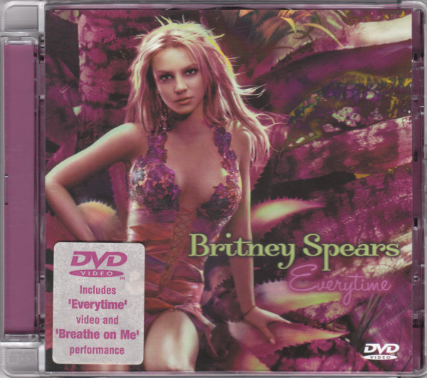

Everytime (song) Britney Spears
"Everytime" is a song by American singer Britney Spears on her fourth studio album, In the Zone (2003). It was released on May 10, 2004, by Jive Records as the third single from the album. After her relationship with singer-songwriter Justin Timberlake ended in 2002, she became friends with her backing vocalist Annet Artani. They started writing songs together at Spears's house in Los Angeles, and then traveled to Lombardy, Italy, where they collaborated on "Everytime". Spears composed the music herself, but she developed the lyrics with her friend. According to Artani, the song was written as a response to Timberlake's 2002 song "Cry Me a River"; Spears has neither confirmed nor denied this claim.
"Everytime" is a pop ballad. Its lyrics are a plea for forgiveness for inadvertently hurting a former lover. The song received acclaim from music critics, who mostly complimented its lyrical content, deeming it more organic than most of the tracks on In the Zone. Spears's maturity and her songwriting abilities were also complimented. "Everytime" peaked at number 15 on the Billboard Hot 100. Outside of the United States, "Everytime" topped the charts in five countries, including Australia, the Republic of Ireland, and the United Kingdom, and peaked within the top ten of the chartsin a further twelve other countries. It is also certified Gold in seven countries. Spears did a series of live performances, such as for television shows Saturday Night Live on NBC and Top of the Pops in the United Kingdom. On tour, she also performed: the song on piano in a flowered-themed setting at The Onyx Hotel Tour (2004), while suspended on a giant umbrella at The Circus Starring Britney Spears (2009), and in an angel costume at Britney: Piece of Me (2013). The song has been covered by artists like Glen Hansard, Kelly Clarkson, and James Franco in the film Spring Breakers (2013).
Inspired by the cinematography of the 1995 film Leaving Las Vegas, the music video for "Everytime" was directed by David LaChapelle. It features Spears as a pop star fighting with a male companion as she is hounded by paparazzi. She starts to drown in her bathtub after bleeding from a head wound. In the hospital, doctors fail to resuscitate her, while simultaneously a child is born in the next room (implying she has been reincarnated). The original concept had Spears kill herself from a drug overdose, but that part of the plot was removed after it received criticism from organizations such as Kidscape, who perceived it as a glamorization of suicide. Critics took note of the video for its religious references to The Passion of the Christ, Kabbalah, and stigmata, as well as for foreshadowing Spears's own struggles with fame.

Background
and
writing
Spears's three-year relationship with singer-songwriter Justin Timberlake ended in 2002 after months of speculation.[2] In November 2002, Timberlake released the song "Cry Me a River" as the second single from his debut solo album Justified. The song's music video featured a Spears lookalike and fueled the rumors that she had been unfaithful to him.[3][4] "Cry Me a River" is often credited as being the song that propelled Justified into the charts.[5] In September 2001, Annet Artani accepted to become a backing vocalist for Spears's 2001–02 Dream Within a Dream Tour. Her interactions with Spears during most of the tour were limited to small conversations at the gym and vocal warm ups. Artani had begun a relationship with the show's musical director during 2002; however, it was not working out well by the end of the tour. Before the final date in Mexico City, Spears called her and asked about the relationship. Artani told her they were going to break up, to which Spears responded, "Don't worry about it, you're going to hang out with me."[6] Concluded the tour, Spears and Artani began to forge a friendship. Spears invited Artani to her house in Los Angeles. According to Artani, their relationship grew out of their shared romantic experiences at the time. She explained, "Basically, we commiserated because she, at that time, had broken up with Justin [Timberlake]. Maybe like nine months before, but of course it was really fresh in the media. I was just breaking up with this guy, so we kind of like—I think we kind of needed each other." Artani stayed at Spears's house for a few weeks, in which they started writing songs at the piano. Shortly after, they traveled to Lake Como in Lombardy, Italy. Artani added, "It was me and her, her stylist and Felicia, and we had this humongous house to ourselves, and they had a piano there as well."[6]
According to Artani, "Everytime" was written in large part as a response to "Cry Me a River" as well as various radio interviews. Artani explained, "He was getting personal. Here, she had a different type of image, and he was really exposing some stuff that she probably didn't want out there, and in front of her little sister ... I remember her sister being mortified and her being mortified. I'm sure that that really hurt her."[6] The song was also speculated to be a reply to Timberlake's "Never Again", a ballad which appeared on his debut solo album Justified. "Everytime" was recorded at Conway Studios in Los Angeles and mixed at Frou Frou Central in London, England.[7] During an interview with Hip Online, Spears commented about the recording sessions, saying,
"... Like with 'Everytime' I wrote the whole thing from scratch on the piano. Musically there was no track or anything. I was just at my house and I did the whole thing by myself. And then I went and I played it for [Guy Sigsworth] and I just basically told him exactly how I wanted the song to sound. And he was so amazing because there's a lot of producers you tell them things and they don't get it. And you're like oh, that's not the right way. He got it just right. He was amazing. And so that song specifically, you know, I did everything."[8]
"Everytime" was one of the first songs finished for In the Zone, previewed on May 30, 2003, to Quddus Philippe of MTV at Battery Studios in New York City.[9] It was registered with the U.S. Copyright Office on April 26, 2003 under the title of "Everytime I Try" and SRU000530591 registration number with a given recording year of 2002. Spears named it the most personal song of the album along with "Touch of My Hand", explaining, "It's one of the songs that when you hear, it's like the kind of song when you go to heaven. It kind of takes you away. You know, it takes you in to a very cool consciousness I think."[8]
Composition
"Everytime" is a pop ballad. It begins with a music box introduction accompanying Spears's breathy vocals, which build from soft to strong through the song.[9] According to the sheet music published at Musicnotes.com by Universal Music Publishing Group, "Everytime" is composed in the key of E♭ major, with a tempo of 110 beats per minute. Spears's vocal range spans from the low note of A♭3 to the high note of E♭5.[10] "Everytime" lyrics are a plea for forgiveness for inadvertently hurting a former lover. In the song, the singer explains she feels unable to continue in lines such as "Everytime I try to fly I fall / Without my wings I feel so small". Jennifer Vineyard of MTV compared the song lyrically to another ballad from In the Zone, "Shadow", since they both speak "about how reminders of a lover can still linger after he's gone."[11] During an interview with Jennifer Vineyard of MTV, Spears said about "Everytime", "It's about heartbreak, it's about your first love, your first true love. That's something all people can relate to, because you all have that first love that you think you're going to be with the rest of your life."[12] When asked if "Everytime" was about Timberlake during an interview with Diane Sawyer in PrimeTime, she responded "I'll let the song speak for itself."[3]
Critical reception
"Everytime" received widespread acclaim from music critics, who complimented its lyrical content and Spears' breathy vocals, while others deemed it a standout track on In the Zone. Gavin Mueller of Stylus Magazine considered "Everytime" to be the best track on In the Zone, explaining "it is just a spare piano ballad, simple yet effectively fragile".[13] Ali Fenwick of The Johns Hopkins News-Letter complimented Spears' songwriting and added the song "shows a glimmer of the talent that hides behind the robotic, synthed-out vocals on the rest of the album".[14] Christy Lemire of MSNBC.com called it "actually a pretty tune" and named it the best ballad in Greatest Hits: My Prerogative.[15] Jason Shawhan of About.com said "Everytime" "screams Single!".[16] For Daniel Megarry from Gay Times, it's "one of the most stunningly heartbreaking songs of all time".[17] Nayer Nissim, from Pink News, wrote that "despite some limp efforts scattered around her albums, Britney can actually do some utterly compelling and heartbreaking ballads, and this is her very best. Beautiful, disarming, and emotionally raw".[18] Digital Spy's Alim Kheraj praised its "lullaby-like production, wonderfully simple piano riff and confessional lyrics".[19]
For Alex Macpherson from The Guardian, it's one of the best examples of Spears' "distressing vulnerability" as well as her fifth best song; "one of Britney's oddest curveballs was following the gleaming banger 'Toxic', with its polar opposite. [...] ['Everytime'] is a rare pop hit that seizes attention by shrinking further away".[20] Spence D. of IGN said the song "continues to mine the Zone turf and unleashes what is ostensibly Britney's first mature ballad, at least in terms of being musically staid and stripped of any danceteria sweat and gloss".[21] Linda McGee of RTÉ.ie said that along with In the Zone's "Brave New Girl", they were "individually impressive", but disrupted the direction of the album.[22] David Browne of Entertainment Weekly commented, "With its dainty piano, 'Everytime' plays like a forlorn postmortem on her Justin Timberlake era."[23] In 2016, the staff from Entertainment Weekly placed it at number six on their ranking of Spears' songs and called it "her finest ballad and one of the most emotionally affecting songs of her career".[24] Sterling Clover of The Village Voice called it "a weeper in the best 'Time After Time' (1984) tradition."[25] William Shaw of Blender said that while "Everytime" was not her greatest ballad, the lyrics were "certainly heartfelt".[26] A reviewer from the Huddersfield Daily Examiner stated, "[the] breathy ballad [has] got a stage musical feel to it, but Britney's no Elaine Paige".[27] Sal Cinquemani of Slant Magazine named it along with "Shadow" "two sappy ballads".[28]
music video
On March 9, 2004, the treatment of the music video for "Everytime" was released online. It features Spears as a star hounded by photographers, who eventually kills herself by taking prescription drugs and drowning in a bathtub. The suicide scene was perceived to be Spears's response to the rumors that suggested she suffered from a mental disorder.[42] After news of the concept broke, it was criticized by a number of organizations in the United Kingdom and the United States. MTV News' "You Tell Us" received numerous letters from upset viewers, who criticized Spears saying they perceived the ending was a glamorization of suicide. On March 12, 2004, Spears announced through Jive Records she had removed the concept, "due to the potential for a fictional accidental occurrence to be misinterpreted as a suicide". She also clarified it was not her intent to present suicide in any sort of positive light.[43]
The video was directed by David LaChapelle and shot on March 13 and 14, 2004, in Los Angeles. The lighting was described as "saturated, but low and naturalistic" to give the video a cinematic feel, referencing the 1995 film Leaving Las Vegas.[42] It premiered on TRL on April 12, 2004. Spears called the show and explained the video explored reincarnation. She added, "It's more like a movie. It's different than anything I've ever done. It's dark, and it shows me in a different light. Of course, I'm going to go back and do dance videos, but I wanted to be inspired and challenged."[44] The video was released through a DVD single in the United Kingdom. An alternate version of the video which only features Spears singing in the white hallway scenes was released on the 2004 DVD Greatest Hits: My Prerogative.[45]
Synopsis
The video begins with an aerial shot of Las Vegas, Nevada, showing the Palms Casino Resort and continues with a shot of a marquee hotel that reads "Britney Spears Live From Miami The Onyx Hotel Tour Las Vegas", with a picture of Spears holding a leather strap and referencing her Showtime concert special from Miami. Christian author Eva Marie Everson compared the image to "Madonna doing her own impersonation of Marilyn Monroe."[46] Spears and her boyfriend (played by Stephen Dorff) are arriving to the hotel inside a limousine.[46][47] They sit apart from each other, staring out separate windows.[46] Spears wears a Birmingham Barons cap in these scenes.[48] The boyfriend is talking on his cell phone, and when she attempts to touch him, he pushes her away. The entrance is full of fans and paparazzi taking pictures.[46] When they leave the car, fans and paparazzi alike act in an extreme way and fights break in the crowd. While her bodyguards try to protect her, her boyfriend throws magazines at the paparazzi.[42] Stephanie Zacharek of The New York Times compared the shots of the paparazzi with the Jews in the 2004 film The Passion of the Christ.[49] During this scene, she gets hit in the head with a camera, and unknowingly gets a wound on her head, but keeps walking.
Inside their hotel room, Spears and her boyfriend start screaming at each other. When he tries to make amends and get close to her, she brushes off his attempts and walks away. Her boyfriend gets mad and then throws a vase at the wall while Spears goes into the bathroom, hurling a drink at the mirror. She begins to fill the bathtub and remove her clothes. After this, the video includes intercut scenes of a close-up of Spears singing in a white coat in front of a bright white light.[42] As she lies in the bathtub, a red string, a custom associated with Kabbalah is seen in her wrist. She touches her head and looks at her hand, realizing she is bleeding from the wound. According to Jennifer Vineyard of MTV, the blood in her hand is stigmata.[44][47] She loses consciousness in the bathtub and drowns.[44] Shortly after, her boyfriend finds her and tries to resuscitate her.[42] Meanwhile, it is revealed that in the close-up scenes Spears is actually inside a hospital hallway. The video continues with scenes of her being carried into an ambulance and surrounded by photographers, as well as scenes of her being resuscitated by doctors in a hospital bed.[46] The ghost of Spears in a white shirt, watches herself in the bed and walks into the next room, where a baby girl is born. Spears is then seen running away from the camera into the light. The music video ends with her rising from under the water, resting her head and smiling, suggesting the whole scene of her death was a dream or a morbid fantasy.[44]
Reception
Eva Marie Everson wrote that the music video showed the reality "behind the glitz and the glamour".[46] Dominic Fox commented, "Even in its bowdlerised form, the 'Everytime' video presents a moment of existential indecision, a fugue of suicidal ideation in which the singer fantasises about her own death".[50] While reviewing the music video for her 2009 single "If U Seek Amy", James Montgomery of MTV called the music video for "Everytime" "underrated".[51] Rolling Stone in their 2009 article "Britney Spears: The Complete Video Guide", called it "horribly prophetic and depressing" and added that the clip foreshadowed Spears's struggles with fame and mental instability during 2007 and 2008.[52]
Live performances
On October 18, 2003, "Everytime" was performed by Spears for the very first time during the twenty-ninth season of the American comedy show Saturday Night Live.[11] She also performed it at Britney Spears: In the Zone, a concert special that aired in ABC on November 17, 2003.[53] "Everytime" was also performed by Spears at 2004's The Onyx Hotel Tour. Before the tour began, Spears said that it was one of the songs she was looking most forward to perform, explaining, "I really think I'm talking to everyone when I perform 'Everytime'".[12] It was the first song of the third act, titled "Mystic Garden". It began with a video interlude in which Spears walked into a garden wearing a rainbow-colored dress and sat in a flower-covered piano. As the video ended, it was revealed that she was sitting onstage in a similar setting. She started the performance talking to the audience about the media coverage of her personal life. She played the piano and sang until the second verse, where she stood up and walked to the center of the stage to continue the performance.[54] Neil Strauss of The New York Times commented, "It was the only song that she appeared to sing unaccompanied by backing tapes".[55] Kelefa Sanneh of Blender called it the best performance of the show.[56]
"Everytime" was also performed by Spears at the British music chart show Top of the Pops in June 2004.[57] Spears also performed the song at 2009's The Circus Starring Britney Spears. "Everytime" was the only song that was not included in the released setlist, and was added as a surprise.[58] It was the sixth and last song of the second act, titled "House of Fun (Anything Goes)". After a Bollywood-inspired performance of "Me Against the Music" from In the Zone, Spears sat on a giant umbrella in the middle of the stage and briefly talked to the audience. She performed "Everytime" while the umbrella was lifted into the air.[59] Spears included "Everytime" on the setlist for her Las Vegas residency, Britney: Piece of Me. After a brief interlude, descended from the ceiling as a "giant, white-winged angel". After a snow shower of confetti, the song transitioned into "...Baby One More Time".[60]
Cover versions
Jackie Evancho covered the song for her debut album Prelude to a Dream (2009). On August 19, 2010, her version debuted at number three on Billboard's Classical Digital Songs chart.[61]
British singer Cher Lloyd covered the song live on The X Factor in the United Kingdom in 2010. This caused the song to re entry the top 50 singles chart in the UK.|[62]
On July 27, 2012, Kelly Clarkson covered the song during the Las Vegas stop of her summer tour, as an audience request. Clarkson had a harpist accompany her during the performance, and told the audience, "This song is one of my favourite songs. [...] I actually prefer [Spears's] version better, because it just sounds really sad, but I'm going to try and do it." Spears approved of Clarkson's cover via her Twitter account, calling it "beautiful".[63]
Track listings
- European CD single
"Everytime" (Album Version) — 3:50
"Everytime" (Hi-Bias Radio Remix) — 3:29
- Australian, Canadian, European and Japanese CD maxi single
"Everytime" (Album Version) — 3:50
"Everytime" (Hi-Bias Radio Remix) — 3:29
"Everytime" (Above & Beyond's Radio Mix) — 3:47
"Everytime" (The Scumfrog Vocal Mix) — 9:53
- German CD maxi single
"Everytime" (Album Version) — 3:50
"Everytime" (Hi-Bias Radio Remix) — 3:29
"Everytime" (Above & Beyond's Radio Mix) — 3:47
"Don't Hang Up" — 4:01
- DVD single
"Everytime" — 4:09
"Breathe on Me" (Performed on Britney Spears CD:UK Special) — 3:54
- UK 12-inch vinyl
"Everytime" (Hi-Bias Radio Remix) — 3:29
"Everytime" (Above & Beyond's Radio Mix) — 3:47
"Everytime" (The Scumfrog Vocal Mix) — 9:53
- US 12-inch vinyl (The Remixes)
"Everytime" (The Scumfrog Vocal Mix) — 9:53
"Everytime" (Valentin Remix) — 3:28
"Everytime" (Above & Beyond's Club Mix) — 8:46
"Everytime" (Dr. Octavo's Transculent Mixshow Edit) — 5:18